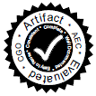

Click to download the PDF version
The International Symposium on Code Generation and Optimization (CGO) provides a premier venue to bring together researchers and practitioners working at the interface of hardware and software on a wide range of optimization and code generation techniques and related issues. The conference spans the spectrum from purely static to fully dynamic approaches, including techniques ranging from pure software-based methods to architectural features and support.
Original contributions are solicited on, but not limited to, the following topics:
Code Generation and Optimization
- Efficient execution of dynamically typed and higher-level languages
- Optimization and code generation for emerging programming models, platforms
- Optimizations for energy efficiency
- Profile-guided, feedback-directed, and machine learning based optimization
- Compiler abstractions and intermediate representations
Static and Dynamic Analysis
- Profiling and instrumentation for power, memory, throughput or latency
- Efficient profiling and instrumentation techniques
- Program characterization methods
- Profile-guided optimization
- Novel and efficient tools for power, performance analysis, debugging and testing
Optimization for Parallelism
- Runtime systems for parallelism & heterogeneity
- Optimizations for heterogeneous or specialized parallel targets, e.g. GPUs
- Compiler-driven data distribution and synchronization
- Thread extraction
OS, Architecture and Runtime Support
- Architectural support for improved profiling, optimization and code generation
- Integrated system design (HW/OS/VM/SW)
- Memory management and garbage collection
Security and Reliability
- Code analysis and transformations to address security or reliability concerns
Practical Experience
- Deployed dynamic and static compiler and runtime systems for general purpose, embedded system and
Cloud/HPC platforms
Applications of above in emerging technology areas, such as
- Web programming environments, application runtimes, optimizations
- SOCs, heterogeneous platforms hardware/software co-design, analysis and optimization
CGO 2015 is co-located with HPCA 2015 and PPoPP 2015 this year. Authors should carefully consider the difference in focus of the conferences when deciding where to submit a paper.
CGO will make the proceedings freely available via the ACM DL platform for up to two weeks before and two weeks after the event. This option will facilitate easy access to the proceedings by conference attendees, and it will also enable the community at large to experience the excitement of learning about the latest developments being presented in the period surrounding the event itself.
Artifact Evaluation Process
Authors of accepted papers will be invited to formally submit their supporting materials to the Artifact Evaluation process. The Artifact Evaluation process is new this year and is run by a separate committee whose task is to assess how the artifacts support the work described in the papers. This submission is voluntary and will not influence the final decision regarding the papers. Papers that go through the Artifact Evaluation process successfully will receive a seal of approval printed on the papers themselves. Additional information is available on the CGO AEC web page.
{kind=link}
Authors of accepted papers are encouraged to make these materials publicly available upon publication of the proceedings, by including them as “source materials” in the ACM Digital Library.
Important Dates
- Abstract Submission: September 12, 2014
- Paper Submission: 11:59pm EST, September 12, 2014
- Author Response Period: October 21-23, 2014
- Notification to Authors: November 3, 2014
- Artifact Submission: November 18, 2014
- Artifact Decision: December 15, 2014